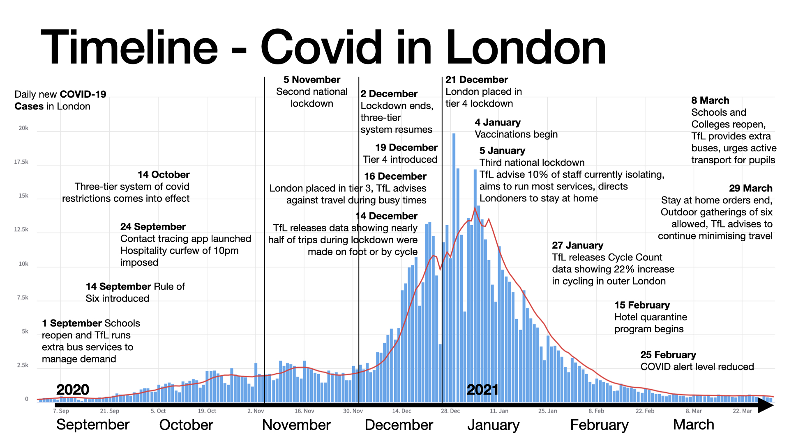
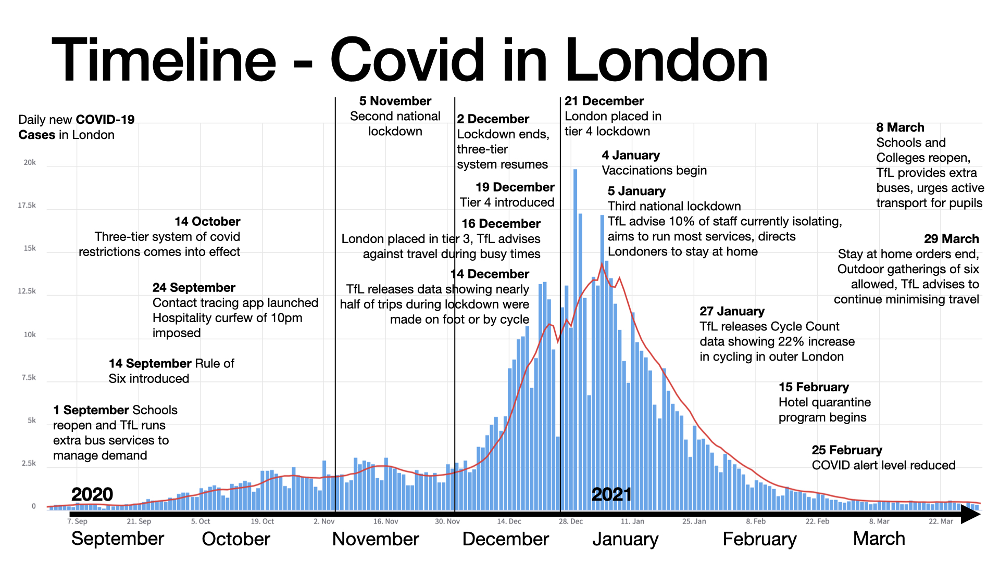

Visualising London's Covid-19 Lockdowns
Visualisation
Visualising lockdown events alongside daily new cases of Covid-19 reveals the cause and effect of London's public health response. This interactive visualisation was created using d3.js, displaying London's daily new cases and deaths over time against the approximate level of lockdown restrictions.
Hover over the line chart to see exact numbers of cases and deaths. Click on the dots at the bottom to highlight events and see their details below. Events include milestones of London's and the UK's response to coronavirus, especially in terms of transport.
London COVID-19 cases and deaths data from the UK Government's API at https://coronavirus.data.gov.uk/. Lockdown level is an indication only, determined by the author based on the lockdown restrictions in London and should not to be confused with the UK Government's COVID-19 alert level system. Events were collated from multiple sources, including Wikipedia and TfL Press releases.
A previous version of this visualisation concept is available as a pair of static images below. Theu use https://coronavstats.co.uk/england/localData as a backing column chart.
 

{kind=link}